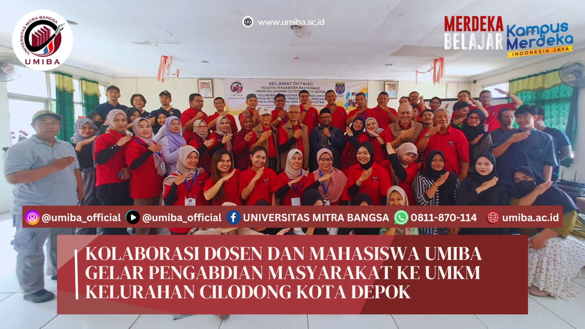

FASILITAS KAMPUS
UMIBA menyediakan berbagai fasilitas untuk mendukung kegiatan akademik dan non-akademik:
1. Ruang Kelas: Dilengkapi dengan AC, proyektor, whiteboard, dan koneksi internet.
2. Laboratorium Komputer: Mendukung praktik dan simulasi pembelajaran.
3. Laboratorium Pengadilan Semu (Moot Court): Untuk mahasiswa hukum berlatih simulasi persidangan.
4. Perpustakaan: Menyediakan koleksi buku, jurnal ilmiah, dan akses e-library.
5. Area Diskusi Mahasiswa: Ruang untuk kolaborasi dan pertukaran ide.
6. Sarana Ibadah: Mushola untuk kegiatan keagamaan.
7. Fasilitas Olahraga: Lapangan basket, futsal, dan tenis meja.
PROGRAM STUDI DAN AKREDITASI
UMIBA menawarkan berbagai program studi di bawah naungan tiga fakultas utama:
Fakultas Manajemen & Bisnis:
Manajemen (S1),Magister Manajemen (S2)
Fakultas Hukum:
Ilmu Hukum (S1)Fakultas Teknologi Informasi & Aktuaria:
Ilmu Komputer (S1), Sistem & Teknologi Informasi (S1), Ilmu Aktuaria (S1)
KEGIATAN MAHASISWA
UMIBA aktif dalam kegiatan pengembangan mahasiswa dan pengabdian kepada masyarakat, antara lain:
Pengabdian Masyarakat: Mahasiswa Magister Manajemen mengadakan pelatihan “Strategi Digital untuk UMKM Maju” di Desa Jambenenggang, Sukabumi, untuk membantu pelaku UMKM dalam inovasi dan pemasaran online.
Program Magang MBKM: Mahasiswa semester 6 berkesempatan mengikuti magang di Badiklat BPK RI, memberikan pengalaman praktis dalam audit dan pelaporan keuangan.
LOKASI KAMPUS
UMIBA memiliki dua kampus utama di Jakarta dan satu di bekasi:
1. Kampus Pusat: Jl. Raya Tanjung Barat No. 11, Pasar Minggu, Jakarta Selatan.
2. Kampus 2: Jl. Perdagangan No. 54, Bintaro, Pesanggrahan, Jakarta Selatan.
3. kampus 3: Jl. Inspeksi Kalimalang No. 208/209, Bekasi